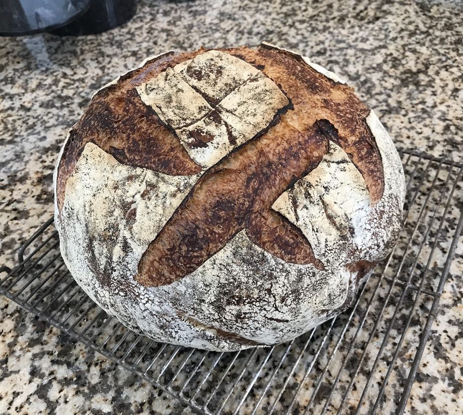
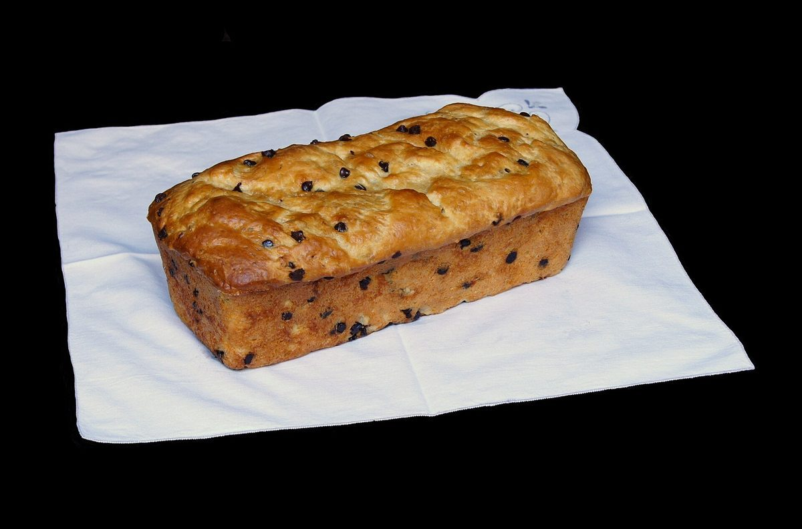

30° / 店のこと
店のこと
お店について確認できているのは、所在地・電話番号・Instagramのアカウントの三つです。
このページの「想像してみる」部分は、制作側が想像して書いたものです。お店の実際の様子・考え・パンの種類とは関係がありません。
三角形は三辺そろって一つの形になります。確認できたのは上の三辺だけで、営業時間・定休日・メニュー・価格・ご予約・駐車場は準備中です。
想像してみる
名前から思い浮かべたこと
由来は分かりません。制作側は、パン屋さんという業種から、粉・生地・窯といった材料や道具のかたちを想像しました。三角定規の斜めの線で写真を切ったのは、そうしたものを少し違う角度から眺めてみたかったからです(実際のお店の姿ではありません)。
下の写真はどれもフリー素材のイメージで、このお店で作られたパンではありません。


FIG.3 / 材料と道具のかたち
粉、生地、皮のかたち